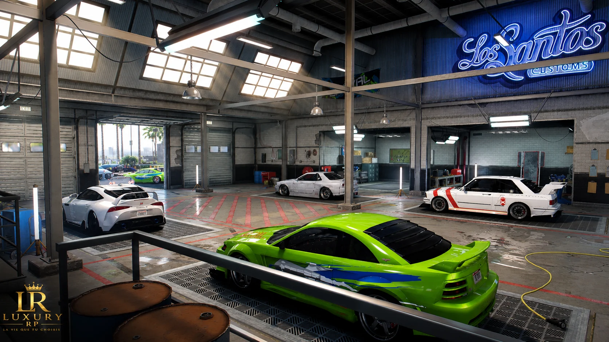
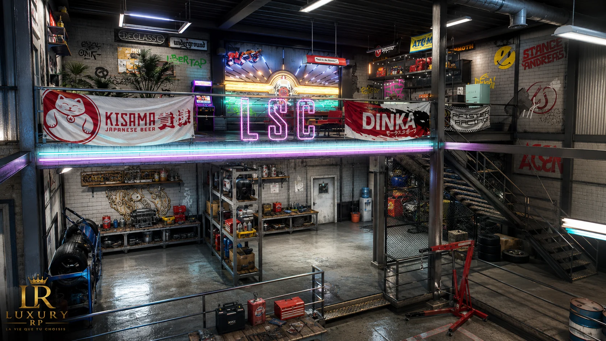

Rôle en ville
LS Custom accompagne les conducteurs dans l’entretien, l’amélioration et la mise en scène de leurs véhicules au quotidien.

LS Custom assure les réparations, améliorations et préparations rapides des véhicules de la ville, avec une vraie identité atelier.
LS Custom assure les réparations, améliorations et préparations rapides des véhicules de la ville, avec une vraie identité atelier.
Cette page pose le cadre RP, l’ambiance et les points d’entrée de cette entité. Les modalités d’accès, les recrutements et les annonces officielles restent confirmés sur Discord.
Une lecture claire pour comprendre l’identité du lieu, ses interactions RP et les conditions pour le rejoindre.
LS Custom accompagne les conducteurs dans l’entretien, l’amélioration et la mise en scène de leurs véhicules au quotidien.
Entretien, réparations, améliorations, conseils mécaniques et service rapide pour les conducteurs de la ville.
Joueurs disponibles, polis et constants, capables de créer du service, de l’échange et une vraie continuité RP.
Les ouvertures de poste sont confirmées sur Discord afin de garder un recrutement aligné avec l’activité réelle de la ville.
Une organisation lisible permet de répartir les responsabilités, d’accompagner les nouveaux membres et de faire progresser le RP sans confusion.
Une sélection d’images pour saisir l’atmosphère du lieu, son rythme et la place qu’il occupe dans l’univers Luxury RP.


Les candidatures, informations et annonces passent par Discord. Présentez votre personnage, votre motivation et votre disponibilité RP.